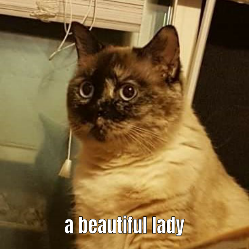

Back to Tutorials
Twitter Bot Tutorial
No coding experience required!
Introduction
Today we'll be making Twitter bots!
Bots on Twitter range from being very simple to very complex,
but this tutorial will teach you just the basics you need to get
a bot up and running in an hour or so.
Once you understand the basics, I encourage you to look up some
more advanced tutorials to see what's possible. Here are just a few
examples of things you can do with Twitter bots, to give you ideas
(some of these are very simple, others are very advanced!):
Year Progress Bot
Would You Rather Bot
Squeegee Bot
*Poem.exe Bot
*Feelings Bot
Emoji Tetra Bot
*Mothman Bot
Please Caption Bot
Poem Translator Bot
*Literary Patches Bot
*Emoji Aquarium Bot
*bots marked with an asterisk are bots that we could construct with just the information in this tutorial
And here's some bots that I made myself (again, just using the stuff in this tutorial!):
Unicode Faces Bot
X-Files Plot Bot
Cat Memes Bot
Tools
official Tracery editor
alternate Tracery editor (more beginner-friendly)
Cheap Bots Done Quick (CBDQ)
You don't have to install anything for this tutorial,
it can all be done online!
Overview
Tracery is a tool built to do basic text generation, MadLibs-style,
from a list of lists that you create. (If you're familiar with JSON,
that's what this is, but you don't need to know what JSON is to use
Tracery.) When you upload your Tracery
code to Cheap Bots Done Quick and connect a Twitter account,
tweets will be generated and posted according to the variables and
lists you create in Tracery and the schedule you set in CBDQ.
You can make your lists as simple or as complex as you like.
The
online Tracery editor has a helpful
visualization tool for keeping track of the parts of your list
and how they work together, so I recommend writing your code there
rather than in another text editor. Or, you can use the alternate editor
linked above-- it has an interface that's easier to understand for beginners.
Tutorial
STEP ONE: Coding with Tracery
Start by coming up with a sentence structure that can be varied
with different words (think MadLibs!) and then identify the
different word types you'll need to construct that sentence
(for this tutorial example, I'll make a basic D&D character
generator: "My character [name] is a [level] level [class]."
So an example sentence might be "My character Mardred is a 5th level
bard.") You'll also need to come up with a list of words that
fit each category that you create. (for example, the "class"
category in my example might include "cleric", "fighter", "bard",
"wizard", etc.)
In Tracery, you put the name of the list in quotation marks,
followed by a colon, and then put the list items in a set of
brackets, with each item within quotation marks. When you want
to randomly pick an item from another list, use this notation:
#list_name#. Each list should be on a separate line, and should
be followed by a comma (except the last one). The first list is
your main structure, and it should be named "origin". See the
example code below to see this structure in action.
Example code:
{
"origin":["My character #name# is a #level# level #class#."],
"name":["Lucretia","Roswell","Davenport","Johann","Sloane","Hurley","Barry"],
"level":["1st","2nd","3rd","4th","5th","6th","7th","8th","9th","10th"],
"class":["cleric","fighter","wizard","rogue","bard","druid","paladin"]
}
Example output:
My character Davenport is a 2nd level rogue.
Important Note: Tracery is very picky about commas and new lines.
If the output isn't showing up in the editor, go through and
triple check that you have a comma after every list except the
last one, and that each list is on a new line. It's best to write
your code in the
online Tracery editor
for this reason, so that you can catch those kinds of errors as you go.
You may also have issues copying and pasting my code directly from
this website (I think there's a weird issue with the line breaks breaking the Tracery parser);
you'll probably have better luck if you just use my code
as a model, and type your own code out in the editor yourself.
Another Note: Technically, this is all you need to make a
functioning bot, so if you're short on time and just want a basic
bot, you can skip to Step Five at this point. Otherwise, stick
around for some techniques that will make your bot a little more
sophisticated.
STEP TWO: Saving Variables
If you want to use a particular word type twice in your tweet,
and you want both instances of it to match up (i.e. if your
character's name is randomly picked as "Lucretia" the first time,
you want it to still be "Lucretia" the second time), you can use
a variable to pick the word just once and then store it for use
later in the tweet. To store a variable, use this notation:
[variableName:#variableListName#] at the beginning of the "origin"
list (it will not show up in the output when you write it here).
Then, when you want to refer to that variable, use #variableName#.
Example Code:
{
"origin":["[myName:#name#][myClass:#class#]My character #myName# is a #level# level #myClass#. #myClass.capitalize.s# are my favorite class to play as."],
"name":["Lucretia","Roswell","Davenport","Johann","Sloane","Hurley","Barry"],
"level":["1st","2nd","3rd","4th","5th","6th","7th","8th","9th","10th"],
"class":["cleric","fighter","wizard","rogue","bard","druid","paladin"],
"place":["Neverwinter","Phandalin","Rockport","the Moon","the Felicity Wilds"]
}
Example Output:
My character Barry is a 9th level cleric. Barry is from Rockport.
STEP THREE: Modifiers
You may want to modify certain variables by capitalizing them,
putting "a" or "an" in front of them, or making them plural or past
tense. You can do that by adding modifiers to the variables; for
example, #name.capitalize# will pick a random item from the "name"
list and capitalize the first letter. You can also create your own
modifiers if you know Javascript, but that's beyond the scope of
this tutorial. Here are some built-in modifiers:
#variable.capitalize# (capitalizes first letter of variable)
#variable.capitalizeAll# (capitalizes all letters of variable)
#variable.a# (adds an "a" or "an" in front of variable)
#variable.s# (makes variable plural)
#variable.ed# (makes variable past tense)
Note: Some of the modifiers may not work properly with words
that have irregular forms of the past tense/plural/etc.
Example Code:
{
"origin":["[myName:#name#][myClass:#class#]My character #myName# is a #level# level #myClass#. #myClass.capitalize.s# are my favorite class to play as."],
"name":["Lucretia","Roswell","Davenport","Johann","Sloane","Hurley","Barry"],
"level":["1st","2nd","3rd","4th","5th","6th","7th","8th","9th","10th"],
"class":["cleric","fighter","wizard","rogue","bard","druid","paladin"],
"place":["Neverwinter","Phandalin","Rockport","the Moon","the Felicity Wilds"]
}
Example Output:
My character Johann is a 1st level bard. Bards are my favorite class to play as.
STEP FOUR: Varying Your Structure
You may want your bot to tweet several variations on your subject.
For instance, in addition to "My character [name] is a [level]
level [class].", perhaps I also want my bot to be able to
generate a full party of characters, like this: "My party is made
up of a [class] named [name], a [class] named [name],
and a [class] named [name]." We can do that by creating a
list of structures for our bot to pick from, the same way we did
with lists of words. Think of it as a MadLib with other MadLibs
nested inside it.
Example Code:
{
"origin":["#line#"],
"line":["[myName:#name#][myClass:#class#]My character #myName# is a #level# level #myClass#. #myClass.capitalize.s# are my favorite class to play as.","My party is made up of a #class# named #name#, a #class# named #name#, and a #class# named #name#."],
"name":["Lucretia","Roswell","Davenport","Johann","Sloane","Hurley","Barry"],
"level":["1st","2nd","3rd","4th","5th","6th","7th","8th","9th","10th"],
"class":["cleric","fighter","wizard","rogue","bard","druid","paladin"],
"place":["Neverwinter","Phandalin","Rockport","the Moon","the Felicity Wilds"]
}
Example Output:
My party is made up of a bard named Roswell, a wizard named Lucretia, and a wizard named Davenport.
or
My character Sloane is a 5th level cleric. Clerics are my favorite class to play as.
If you've been able to follow the tutorial up to this
point, congrats! You've learned the basics of Tracery.
For many bots, you only need these tools plus a more expanded set
of word lists and structures. The lists I used were very short,
but you can put far more words in your list for more variety.
STEP FIVE: Hosting Your Bot on CBDQ
First,
create
a Twitter account for your bot to tweet from.
Then go to
Cheap Bots Done Quick
and log in with that same Twitter account. Copy and paste your
Tracery code into the box that says Tracery JSON, and set how often
you'd like your bot to tweet. Click save. Congratulations!
You've made a Twitter bot!
If you're interested in looking into making Twitter bots
that go beyond what Tracery can do, I recommend visiting
Botwiki
for a masterlist of bot resources and tutorials.
(This is as far as we got in the original CS Club Twitter bots tutorial.
Read on for new and exciting information!)
Generating Images
Not only can you generate text with Tracery, you can also create
images! I'll show two different ways to go about doing this, but
both of them use SVGs (Scalable Vector Graphics). Here's a
Tracery ruleset that generates an SVG with a red background and
circles with randomly generated size, position, and color. (You'll
have to delete the extra space in front of the "svg" and "circle"
tags-- I had to insert those to get them to display here as text,
but you don't want those spaces in the actual Tracery code.)
{
"origin":["hello world{svg < svg width=\"100\" height=\"100\" style=\"background-color: red;\">#circles#}"],
"circles":["#star2##star2##star2##star2##star2##star2#"],
"star2":["< circle fill='\\##color##color##color#' cx='#place#' cy='#place#' r='1#digit#'>< /circle>"],
"place":["#digit##digit#"],
"digit":["1","2","3","4","5","6","7","8","9","0"],
"color":["00","11","22","33","44","55","66","77","88","99","AA","BB","CC","DD","EE","FF"]
}
The "hello world" would be the caption of the tweet, and the {svg} part would be the attached image. When working with images, it can sometimes be easier to just work with the CBDQ editor, since it displays the image a little more clearly.
There's lots more you can do with SVGs and Tracery. Try looking at
the W3Schools page to find more attributes you can adjust.
To close out this tutorial, I'll show you one more cool trick:
importing pictures. Here's
a link to the Tracery source code for my cat memes bot, as an example. (You should be able to copy and paste from there without
the extra spaces issue.)
And here's an example of the output image:

I won't get into as much detail about this example, since you should be able to figure out what a lot of it means now that you're somewhat comfortable with Tracery syntax, but I'll note a few things here and explain further at the tutorial meeting:
-the xmlns:xlink stuff is necessary for linking to an image
-I imported a Google Font for the text on the image, using an @import statement
-I also linked to a bunch of cat pics that I uploaded to my account on the CSCI server, and Tracery randomly selects from those.
That's where we'll wrap up for this tutorial. Now you have all the basic skills to start making bots. There's many other tools out there if you want to get really advanced, and I encourage you to explore them!